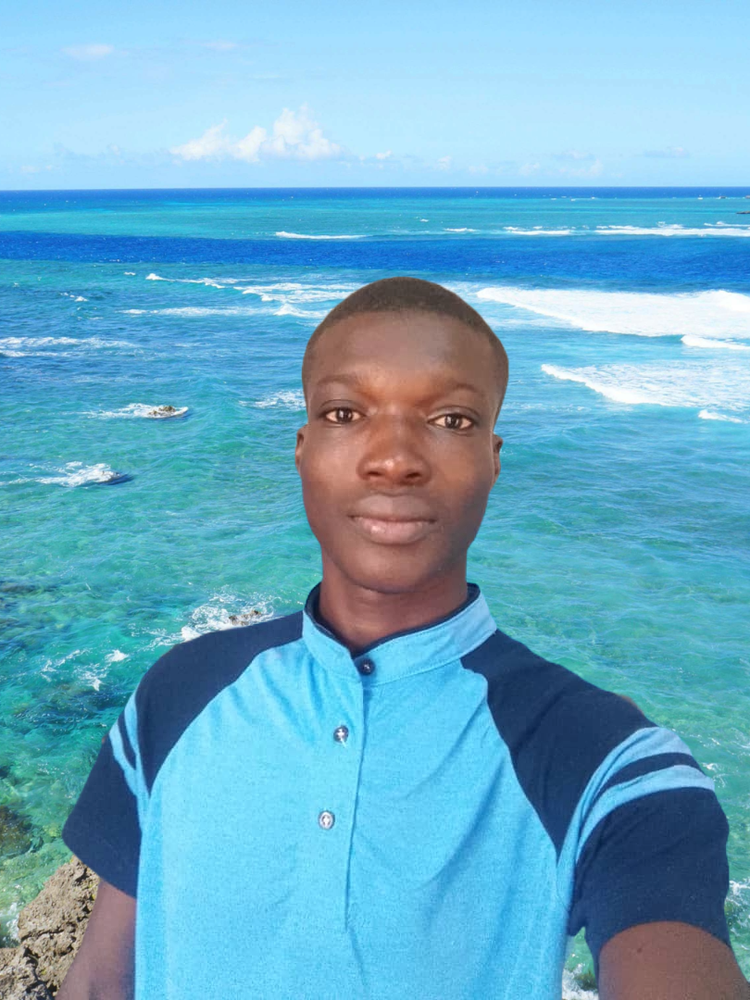

À propos de moi
Je suis Robert BANCE, actuellement étudiant en Licence 3 à l’Université Virtuelle du Burkina Faso, dans la filière Modélisation-Simulation et Calculs Scientifiques. Je fais partie de la promotion des bacheliers 2022.
Mon parcours scolaire
- 2009-2015 : École Primaire Publique Boussougou Secteur 1 — Obtention du CEP en 2015.
- 2015-2019 : Lycée Départemental KIR-SOGA de Gomboussougou — BEPC obtenu en 2019.
- 2019-2020 : Seconde C au Lycée Départemental KIR-SOGA de Gomboussougou.
- 2020-2022 : Première C et Terminale C au Lycée Bogodogo de Ouagadougou — Baccalauréat série C obtenu en 2022.
- Depuis 2022 : Étudiant à l’Université Virtuelle du Burkina Faso.
Mes passions et ambitions
En dehors de mes études, je suis passionné par le développement web, le design graphique et la bureautique. J’aime explorer les nouvelles technologies et acquérir de nouvelles compétences dans le domaine du numérique. Mon objectif est de devenir un professionnel compétent, capable de contribuer au développement technologique de mon pays et de la communauté internationale.
Je suis enthousiaste à l’idée de poursuivre mon parcours académique et professionnel, et je suis déterminé à atteindre mes objectifs avec rigueur et passion. Je crois fermement que la curiosité, l’apprentissage continu et le partage de connaissances sont les clés de la réussite dans le monde numérique d’aujourd’hui.